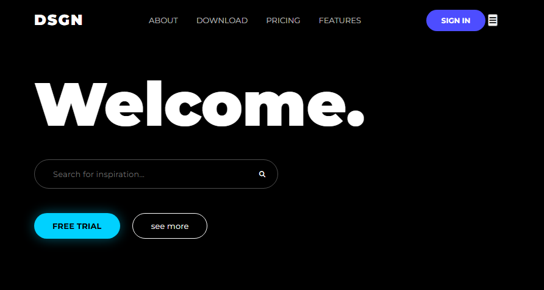
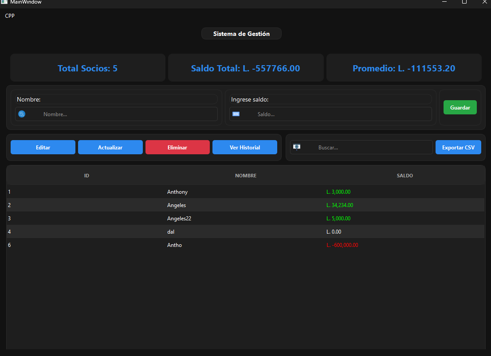

Anthony Andino
Desarrollador Junior
Hola, soy un desarrollador junior con un gran interés en el desarrollo web y de software. Me divierte construir proyectos, aprender de nuevas tecnologías y mejorar mis habilidades de programación. Actualmente me enfoco en desarrollar proyectos prácticos y obtener experiencia real en el rubro TI.
Experiencia Laboral
2024
Asistente de Base de Datos - Sector Privado
Creación de consultas SQL para extraer y analizar base de clientes. Generación de informes administrativos y obtención de experiencia práctica en el manejo de bases de datos.
2023 - Presente
Desarrollador Autodidacta
Aprendiendo y practicando desarrollo web y programación. Construyendo proyectos y mejorando fuertemente mis habilidades técnicas y resolución de problemas.
Educación
2017 - 2019
Educación Media
Educación secundaria completada con un enfoque general académico, desarrollando habilidades fundamentales en razonamiento matemático, lógica computacional y resolución de problemas.
2020 - 2026
Licenciatura en Informática Administrativa (Graduación Pendiente)
Cursado completo de asignaturas y práctica profesional en la Universidad Nacional Autónoma de Honduras (UNAH). Actualmente en espera de la titulación oficial. Enfocado en la programación, Base de Datos y análisis de sistemas.
Mis Servicios
Desarrollo y Programación
Experiencia en programación en C, resolución de problemas y creación de aplicaciones basadas en lógica.
Leer MásGestión de Bases de Datos
Experiencia desarrollando consultas SQL y generación de reportes.
Leer MásAnálisis de Datos
Competente en uso de Excel intermedio para visualización de informes y gestión de datos.
Leer MásMis Habilidades
Front-End
HTML
CSS
JS
BootStrap
Jquery
Back-End
C
C++
Python
Java
Node JS
PHP
UI/UX Design
Figma
Último Proyecto

Snake Game - Terminal Edition
Tecnologías: C Language, Terminal API
Experiencia arcade clásica construida desde cero. Este proyecto demuestra conceptos centrales de programación en C: bucle en tiempo real de juego, lógica para extender el cuerpo, y persistencia de récords basada en archivos locales.
Creative Landing UI

DSGN Creative Studio
Tecnologías: HTML5, CSS3
Interfaz moderna de un estudio creativo con diseño dark mode, efectos neón y glassmorphism en los formularios. Es completamente puro en HTML/CSS, sin usar frameworks adicionales.
Software de Escritorio

Sistema de Gestión (C++)
Tecnologías: C++, Qt Framework
Sistema de gestión de socios que realiza operaciones CRUD interactuando con una interfaz moderna en Qt. Ofrece funcionalidades como búsqueda en tiempo real, dashboard de estadísticas y exportación de datos a formato CSV.